100度纯电SUV第2次春运实录：去程充电1次，返程我学会了「下高速」
引子
我是在 2024 年的 12 月27 号提的极氪7X，是长续航四驱智驾版，标配的100 度电池，2025 年的春节是这辆车的第 1 次春运之旅。
2026 年是我从插混换到纯电后的第2个春节，也是这辆纯电SUV所经历的第 2 次春运之旅。

本次高速里程+走亲戚行驶的总里程为 1287km，具体能耗表现如下图所示：
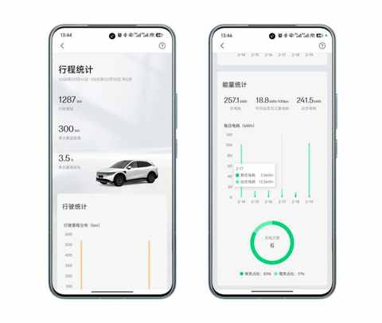
充电 4 次 ，花费为 187.42 元，详细截图 如下图所示 ：
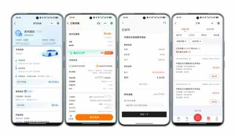
第 1 次春运之旅，印象深刻的是辅助驾驶，因为之前的车不支持也没有深度用过带辅助驾驶的车型。
特别是堵车的时候，真心是省力不少 ，能让开车的过程不那么累。
1月 21 日（腊月廿二，充电未排队） 第①段：560km，上海 ➡️ 安庆 1月 22 日（腊月廿三，充电未排队） 第②段：560km，安庆 ➡️ 上海 1月 27 日（腊月廿八，充电未排队） 第③段：560km，上海 ➡️ 安庆 1月 29 日（正月初一，充电未排队） 第④段： 400km，安庆 ➡️ 淮北 1月 31 日（正月初三，充电排队40 分钟） 第⑤段：600km，淮北 ➡️ 上海 YostYang，公众号：约斯特普通 电车春运 2300km 的智驾感受：用了就真回不去啦！
因为是首次纯电车长途出行，所以当时对充电的情况有做大致的记录，给以后的高速出行积累一些经验。
这次出行后，遇到高速的长途出行场景，我都会秉持下面两个理念和原则：
① 尽量满电出发
一般出发前一天晚上充电，设置为充到 100%，以便增加灵活度，在充电需排队时能从容到下一个服务区。
② 不过分在意能耗
开车的过程中，会看能耗表现，但坚决不让能耗高低影响开车速度，用车道限速的最高值来行驶。
2026 年的第 2 次春运之旅，依然是满电出发……
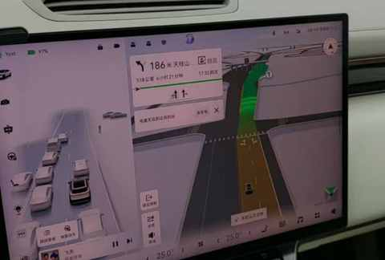
第 2 次春运实录
辅助驾驶进步明显
根据个人感受和驾驶习惯来说，主要反馈在下面 3 个方面：
① 拥堵场景
去年春运，堵车的时用辅助驾驶的场景还记忆犹新：
跟车的距离偏远，响应又不够快，往往前车开了几秒我的车才启动，从而导致旁边两个车道的车都往我前面插队，实在是空隙过大，他们估计以为是我主动让出来的距离，不变道过去都不好意思。
后面实在是忍不了了，关掉辅助驾驶自己开，开了几分钟后觉得实在是有点累，继续用辅助驾驶来跟车，被插队就插队吧，反正不是我开的，用阿 Q 的精神胜利法缓解了被插队的不爽。
今年春运的整体表现进步太多：
跟车距离合理，响应及时，没遇到被插队的情况
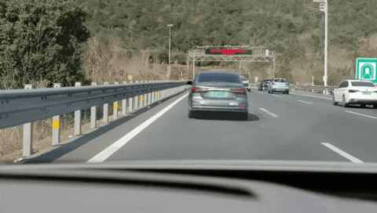
② 车道保持
去年春运， 最烦人的是车道保持的过程不流畅——系统过于敏感，前车稍微变道，系统就急刹，特别突兀，后排的老婆孩子就问什么情况。
今年春运，遇到从左侧或右侧并线的车辆，大多数时候只是轻微减速，保持安全距离后继续跟车，和人类司机一样，能准确预判对方的意图。
③ 超车体验
去年春运，在超大货车时，基本都要补一脚电门，因为并行的时间过长，以前的逻辑过于保守和严谨 ，严重脱离实际场景。
现在明显从容多了，并行时间从以前的5-6秒缩短到3秒内，心理压力小了很多。
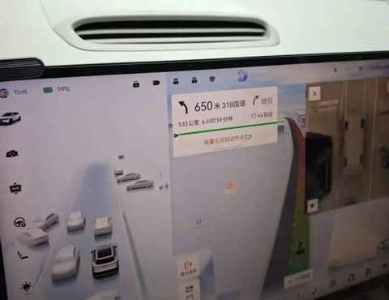
高速能耗及充电体验
得益于天气情况，整体能耗表现优于预期，预估为 20kWh/100km，实际不到 19 kWh/100km。
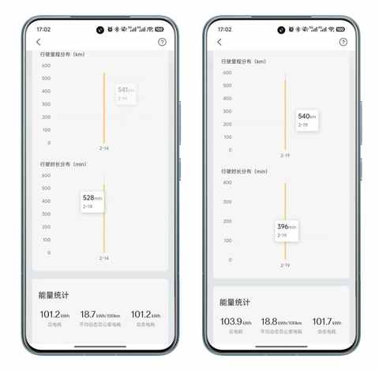
充电体验和去年类似，不过今年返程 连续 3 个服务均要排队充电，顺便体验了一把下高速充电，去程和返程分别充电1 次，两次充电的花费为 122.19 元。
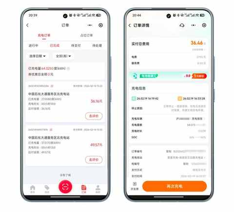
相较去年春运，今年在服务区能看到更多的新能源车和充电桩，每到一个服务区不仅能看到明显的充电桩的标识，同时也有多位工作人员在做引导。
大胆预测下，未来节假日出行，新能源车还会继续增加，遇到服务区充电排队的情况，下高速充电可能会成为越来越多人的选择。
① 去程：上海 → 安庆
2 月 14 日
（腊月二十七，充电 1 次，未排队，花费85.73 元）
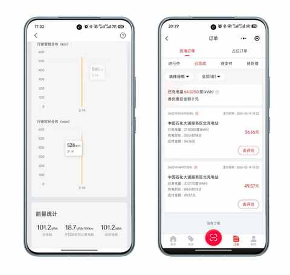
本次行程，在 3 个服务区有停留：
第一个：寒亭服务区
吃饭+上厕所+休息
第二个：南陵 服务区
排队充电车辆偏多，未停车等候，直接开到下一个服务区
第三个：大通服务区：
未排队，顺利充电
当时电量为 31%， 行驶里程为 340km
充电30 分钟，出发时电量为 92%
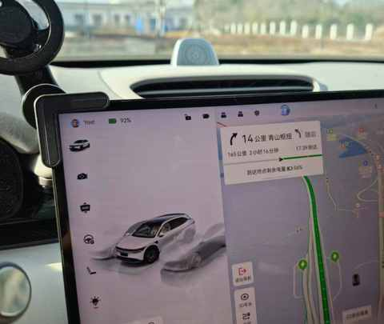
②返程：安庆 → 上海
2 月 19 日
（正月初三，下高速充电 1 次，未排队，花费 36.46 元）
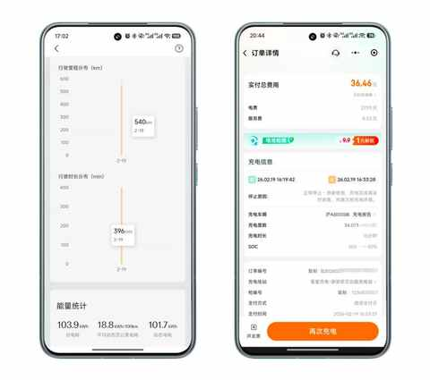
本次行程，在 3 个服务区和 1 个下高速后的充电站有停留：
第一个：洪林服务区
吃饭+上厕所 +休息
第二个：长兴 服务区
排队充电车辆偏多，未停车等候，直接开到下一个服务区
第三个：湖州服务区：
排队充电车辆偏多，未停车等候
当即决定直接从前方出口下高速，然后充电
第四个：星星充电充电站
充电站很空，当时没有其他车在充电
当时电量为 16%， 行驶里程为 431km
充电 13 分钟，出发时电量为 50%
县城及乡镇充电的新发现
① 与中石化再度结缘
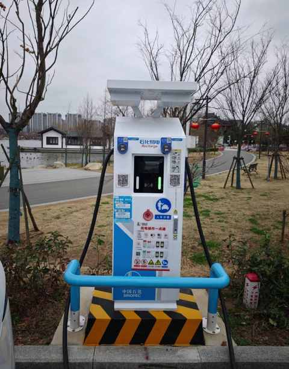
没想到告别加油一年多后，今年春运两次与中石化结缘。
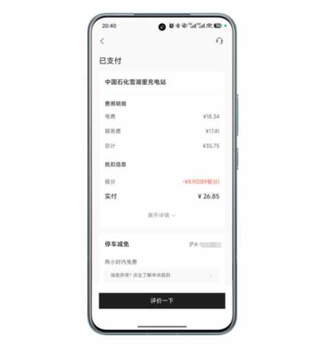
② 首次在加油站充电
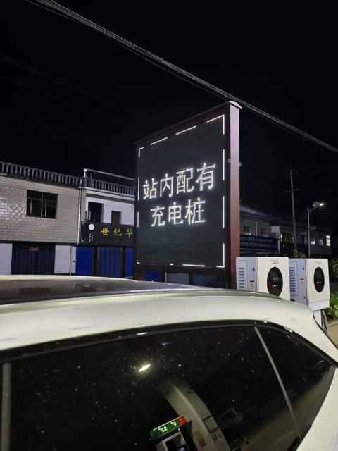
充电桩是中国铁塔的，功率为 30kWh，没多慢但也真不快。
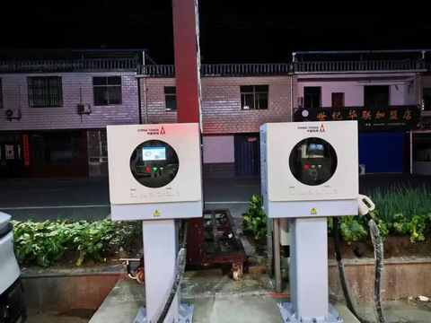
从 65% 充到 99% 耗时 80 分钟，花费 38.18 元。
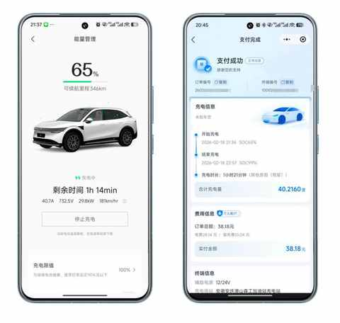
两次春运的总体复盘
每一个大型的节假日，似乎是纯电车型及充电体系的一次摸底考试，而春运由于气温的偏低的原因，更像是一场实打实的期末考试。
如果一定要给一个分数的话，这款四驱长续航的极氪7X， 我 能给到 8 分：
1 分扣在辅助驾驶非第一梯队且有一段不短的距离；
1 分扣在高速上没见过极氪的充电桩，且整体充电桩的数量也偏少。
辅助驾驶是好帮手
现阶段的辅助驾驶还远没有到自动驾驶的程度，在使用过程中依然要保持目视前方和手握方向盘的状态。
但不可否认的是，辅助驾驶是好帮手，在带来高速路上驾驶体验的提升的同时也更省电，从而有更好的能耗表现。
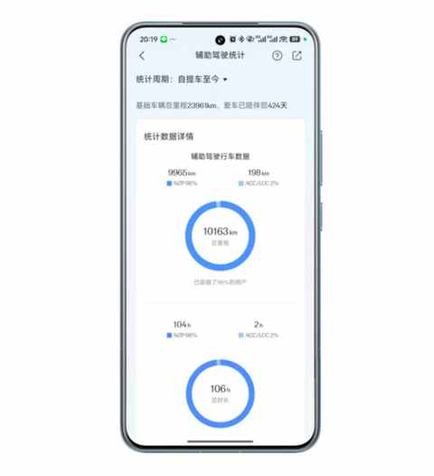
之前每次春运回去，开一天车的情况下，必然会出现腰酸、胳膊酸、右腿酸的状况，晚上睡觉的时候也比较累。
现在开一天车后，和坐高铁到家的状态类似，基本是没有哪里酸或不适。
大电池的确定性
① 续航里程稳定
受天气、时速、温度等外部因素影响小
② 减少充电次数
有利于缩减整体行程时间，更快抵达目的地
针对性的充电策略
以我今年春运的行程为例：单程 540km。
① 去程：上海 → 安庆
车流量由大变小，适合后半程充电
在电量到 40% 左右，便可在服务区充电
② 回程： 安庆 → 上海
车流量由小变大，适合前半程充电
在电量到 70% 左右，便可在服务区充电
③ 下高速充电
有时排队车辆过多，下高速充电的耗时，很可能大大少于等待时间。
结语
以前觉得 “ 续航焦虑 ” 是电池不够大，现在明白是 各种 “ 不确定性 ” 在作祟，能耗表现不确定、能否顺利充电不确定、充电功率不确定……
不过，当我经过两次的春运实战，知道100度电池能让我们一家三口稳稳的在高速上跑500km，当我知道即便是山区的小县城也有了不少快充站后，这个焦虑便瞬间烟消云散。
你的电车长途体验如何？是否也有过从焦虑到从容的转变？欢迎在评论区分享你的故事。
近期文章
想通了！开电车真没必要里程焦虑：一年两万公里，实测续航够用
冬天跑步有感，一件难而正确的事
从插混换到纯电，一年开2万公里后，我已经不在意能耗且没有里程焦虑！
农村、大专生、笨小孩：我的来时路
双持党的秋冬体验：当指纹识别频频失效，才懂得FaceID的好处
35岁的这个11月，我竟挑战了这么多“第一次”
听播客5年，日均108分钟：这3个收获，让我认识到“声音”的力量